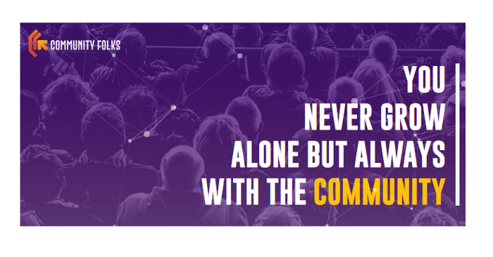

All you need to know about Community Folks!

Welcome to the community of Community Managers in India!
Community Folks is India’s First Community Management & Engagement Firm. And the core of this organisation is our Community. We all believe in peer learning and we share & contribute with our experiences to make this community thrive. Our mission is to create better Community Leaders who together will make our Indian ecosystem understand the importance of Community Management and help brands grow via communities.What are the main rules?
1. We all know- Feed Your Community! So this is our community not any general Fb group where you just ask or randomly like a post. Here we have to — NOT JUST ASK BUT GIVE! Let’s contribute by answering & sharing things we know. [ Remember, Better Together ]2. Make an effort to network! Engage & meet your fellow Community Folks. By the way, no one should remind you this because this is what we do all day! :D
3. Please don’t sell or promote irrelevant things. All of us are already active in many other groups then why to make an extra effort here.
Who are the members of this group?
1. Those who are into community management for few years and have experience in building communities for brands.2. Those who are getting into community management and learning how to build communities.
What will you achieve from this group?
1. Answers to all your community related queries.2. World wide community related updates.
3. Latest blogs and hacks on community management.
4. A network of community builders and leaders.
5. Visibility on the blogs discussion in social media if you contribute your experience and learnings.
6. Access to our Community only meetups/conferences.
What are the activities happening in this community? (SCREENSHOTS and LINKS) 1. Expert round up discussions and blog — Our community members ask their community related queries here and we collect the crowd-sourced learning and suggestions given by the other community members and convert it in a blog.
You can read the complete blog here- https://medium.com/community-folks/8-experts-hacks-to-generate-zillions-of-ugc-roundup-post-a9093e3eff38
2. Welcome new Folks- Every Wednesday, we introduce and welcome our new members in the community.
3. #FolksOfCFK- Every week we pick one of our community members and give them a shout-out so that the other community members get to know more about them.
4. Offline and online meetups - We regularly hosts offline meetups and #communitylive sessions for our community members.

5. Community-Matters series- Here we interview community managers to know their journey of community building.
Check the complete conversation here- YouTube-https://www.youtube.com/watch?v=VTBT1JP3Xw4&t=7s Podcast-https://anchor.fm/community-folks
6. Community learning and sharing- In this section, community members share the community related blogs which they find can be useful for the fellow members too. Because we believe that Sharing is Caring!!
How can you contribute towards growing this community?
1. Taking part in the activities actively and contributing with your learnings and experience.
2. Suggesting good blogs for reading. As we said, it’s a give and take community!
3. Asking community related queries and getting a crowdsourced discussion through our community leaders..
4. Attending the offline meetups, watch parties, live videos etc.
5. Helping us in running this community by moderating few activities.
What if you don’t find the group relevant?
You have all the freedom to exit the group anytime, if you feel that it’s not relevant to you. We would never hold you back and force things that aren’t based on your interest. Although, before that, just let us know the reason and your valuable feedback. We will always be keen to help you in the future and will keep this bond stay forever.
Like we always say, “You never grow alone, but always with a community”. We believe that new ideas bring more excitement and our ultimate goal is to grow together with the community! Therefore, we keep on adding various other activities for our community members. If you are already a part of this, High-Five! If not, join us and be a part of this awesome community!